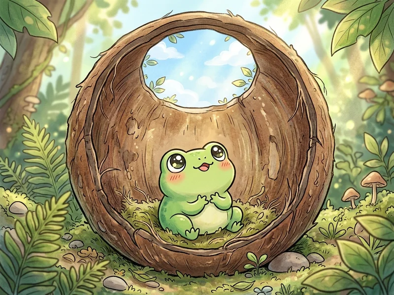

กบในกะลาครอบ
กบ-ใน-กะ-ลา-ครอบ
ตัวอย่างการใช้จริง:
"เราไม่ควรทำตัวเป็นกบในกะลาครอบ ควรหมั่นค้นคว้าและรับฟังความคิดเห็นของผู้อื่นเสมอ"
🌱 ความหมายตรงตัว (Literal)
สิ่งที่เห็นตามตัวอักษรกบตัวเล็กที่อาศัยอยู่ใต้กะลามะพร้าว มองเห็นท้องฟ้าเพียงแค่เท่าปากกะลาแคบ ๆ
💡 ความหมายโดยนัย (Figurative)
ความหมายเปรียบเทียบที่ใช้จริงคนที่มีความรู้หรือประสบการณ์น้อย อยู่แต่ในโลกแคบ ๆ แต่กลับหลงคิดว่าตนเองรู้มากและเก่งที่สุด
🌸 ข้อคิดเตือนใจ (Moral)
คติสอนใจควรเปิดใจกว้าง พร้อมที่จะเรียนรู้สิ่งใหม่ ๆ และยอมรับว่าโลกภายนอกยังมีคนเก่งและความรู้อีกมากมาย
ต้นกล้าคิดว่าตนเองวาดรูปสวยที่สุดในโลก และไม่ยอมรับฟังคำแนะนำหรือฝึกฝนเทคนิคใหม่ ๆ จากคุณครูเลย...
ภาพนี้สื่อถึงสำนวนใด?
ความหมาย: ...
📝 ห้องซักซ้อม 3 ขั้นตอนสู่ใบงาน A4
ฝึกวิเคราะห์ ถอดความหมาย และแต่งประโยคให้คล่อง ก่อนลงมือทำบนใบงานพิมพ์จริง
ขั้นที่ 1
ถอดความหมายตรงตัว (สิ่งที่เห็นตามภาพและตัวอักษร)
ลองคิดในใจหรือเขียนลงสมุดก่อน แล้วกดปุ่มเพื่อดูแนวคำตอบ
ขั้นที่ 2
ถอดความหมายโดยนัย (ความหมายเชิงเปรียบเทียบที่แท้จริง)
ขั้นที่ 3